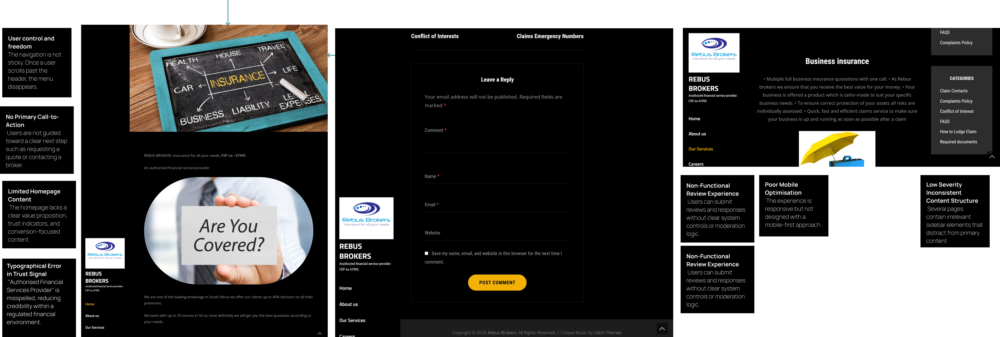
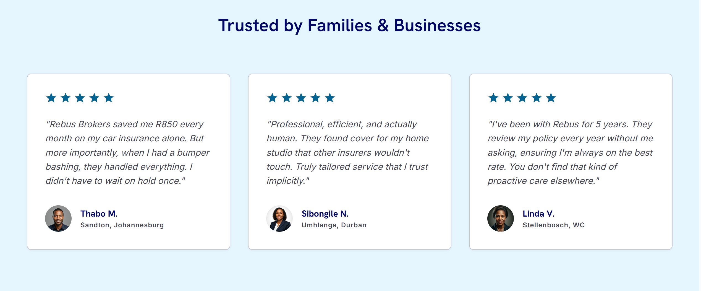
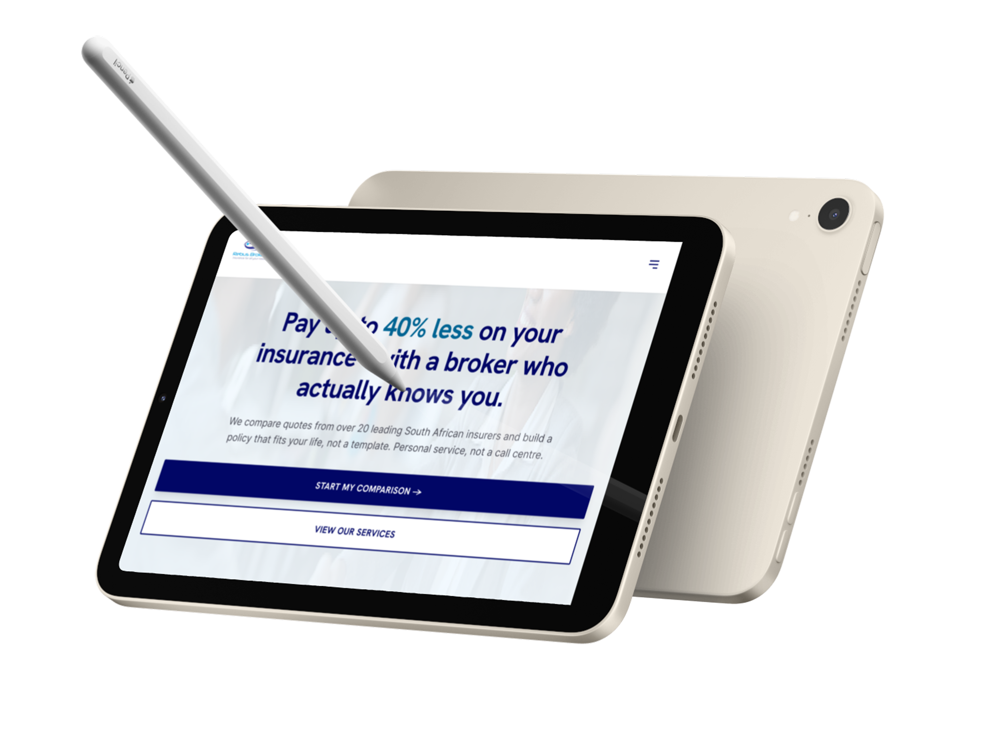

Rebus Brokers is an FSCA-authorized financial service provider (FSP No. 47995) offering access to over 20 insurers and premium savings up to 40% lower than direct competitors. However, their existing website failed to communicate this high-value proposition, meaning warm referral traffic was actively losing confidence upon arrival. Over a three-week end-to-end design sprint, I conducted a heuristic audit and stakeholder research to transform this broken experience into a high-fidelity, developer-ready responsive prototype that explicitly validates trust and streamlines conversion.

Before touching the site, I ran a 45-minute Zoom session with the company contact. Goal: surface the gap between what the business believes about itself and what a first-time visitor actually experiences.
"We get almost all of our clients through word of mouth or referrals. People arrive on the website already half convinced."
"We are not a call centre. We actually know our clients."
The website was built and maintained by people who already trust the business. It was never tested through the eyes of someone who doesn't yet — which meant every trust signal was invisible to the people who needed it most.
I ran the existing site against Nielsen's 10 heuristics. The lowest-scoring areas aligned directly with the trust failures the stakeholder had described.

| Heuristic | Score | Issue |
|---|---|---|
| Visibility of trust signals | 1 / 5 | FSP number buried; typo present |
| Visibility of system status | 2 / 5 | No CTA feedback states |
| Consistency and standards | 2 / 5 | Mixed button styles, no hierarchy |
| Recognition over recall | 2 / 5 | Services not scannable |
Every low-scoring heuristic mapped directly to a trust failure. The site wasn't just aesthetically dated — it was actively undermining credibility on the most important signals a financial services visitor looks for first.
I looked at five other South African insurance brokers to understand what the category looks and feels like: PWV Brokers, Libra Brokers, RBS Insurance, AB Brokers, and REAM Brokers.
What I noticed across the category was a tendency toward one of two extremes. Either the site felt like a direct insurer, slick, corporate, cold, and transactional, or it felt like a small business website that had not been updated in years. There was very little in the middle, something that felt professional and authoritative but also genuinely human.
That gap was the design opportunity. Rebus Brokers' actual differentiator is the relationship. The website needed to embody that, not undermine it.
Because the timeline was short, I used a mixed approach. I ran a 5 question screener survey with 11 respondents drawn from a network of South African professionals in the right demographic range, employed adults between 28 and 52 who currently hold at least one insurance policy. From those 11, I conducted two short structured interviews, 20 minutes each, over Zoom.
.png)

To pull these two interviews into one shared picture, I mapped what users think, feel, say, and do when they land on an insurance broker's website for the first time.

The original site's navigation structure was unclear and did not map to how users think. I restructured it around the user's journey, not the company's structure.


The key change is that "Start a Quote" lives in a slim top utility bar alongside the phone number and the office address, present above the main navigation on every page. It is never more than one click away regardless of where the user is on the page.
"Claims" moves from a buried blog post to a first class navigation item, because someone in an emergency who cannot find the right number will remember that experience, negatively, for years.

I mapped three primary user flows before moving to high fidelity. None of these flows should require more than three conscious decisions from the user. Every section after the hero either deepens trust or lowers friction for the CTA.
Arrives having been told about Rebus by a friend. Lands on the hero. Reads the headline and the savings claim. Scrolls to the trust panel. Clicks "Start My Comparison." Fills in the form. Done.
Arrives unsure whether a broker is worth their time. Reads the hero. Scrolls to "About Rebus Brokers" to understand who is behind the business. Reads "How We Work for You." Clicks the quote CTA. Done.
Has a claim or emergency. Arrives on the site. Finds "Claims" in the navigation immediately. Finds the direct claims email and hotline number within seconds. Done.


I mapped three user flows before moving to high fidelity, and those flows shaped the wireframes below. Each screen was kept deliberately low fidelity at this stage so structure and hierarchy could be tested before any visual styling was applied.

Started from the logo itself — deep indigo + sky blue. No third colour introduced.
Raleway for headings — geometric, confident, distinct. Source Sans Pro for body — warm, legible on screen, designed for regulated long-form text. Together: human and professional.
Scale: 52px display → 36px H1 → 28px H2 → 20px H3 → 16px body → 13px legal. Line-height 1.7 on body.
This is where the research, the principles, and the design system come together into the actual interface. The page reads in a deliberate order: prove the value, prove the people, prove the process, then make it easy to act.
A slim bar above the main navigation carries the phone number, the physical address, and a permanent "Start a Quote" button. Regulatory and contact credibility should be visible immediately, not buried in a footer or a contact page.
The hero leads with a concrete number because concrete numbers earn trust in a way that adjectives never do. "Pay up to 40% less on your insurance" is more credible than "great rates" or "affordable cover." The line that follows it, "with a broker who actually knows you," carries the relationship message straight from the stakeholder interview into the first thing a visitor reads. Below it sits the supporting line about comparing 20+ insurers and building a policy that fits, not a template, and two buttons: "Start My Comparison" as the one primary action, "View Our Services" for visitors who aren't ready to commit yet.
.png)
Directly under the hero sits a three-part panel: Independence, Real Savings, and 24/7 Support, each with a short line of proof underneath it. This is the section doing the heaviest trust-building work on the page, so it sits as close to the headline as possible rather than waiting until further down the scroll.
A short founder section was added that didn't exist on the original site at all. It names the founder, Mr. Tshehlakgolo T Thobejane, gives two short paragraphs on his background and the company's approach, and pairs it with a direct quote from him on a light blue card. A name, a face, and a quote turn "a broker who actually knows you" from a tagline into something a visitor can actually verify.
Right under that sits a simple stat row, 20+ insurers compared, 40% max savings, 15 minutes to get quotes, 24/7 claims support, repeating the same four numbers from the trust panel in plain large type before the page moves into services. Visitors who skimmed past the hero get a second, quieter chance to absorb the same claims.
Six services, each with an icon, a one-line description, and a "Learn More" link: Motor Insurance, Home & Contents, Commercial Insurance, Financial Planning, Claims Support, and Free Policy Review. The grid is scannable in a few seconds, which was the entire point. Nobody should have to read a paragraph to find out whether this company does motor insurance.

Two supporting panels sit between the services grid and the process steps. "Expert Advice, Not Sales Tactics" pairs a short paragraph on the brokers' independence with a photo of an actual advisory meeting. "Institutional Strength, Boutique Service," set on a dark navy background with a close-up image of a hand holding a coin, makes the case that Rebus carries the same weight with insurers as the big national firms while still knowing clients by name. Both exist to answer the same unspoken question: am I dealing with a real, capable operation, or a one-person side hustle?
A four-step process answers the comparison shopper's biggest hesitation, what actually happens after I submit my details. Tell Us Your Needs, Market Search, Explain Options, Fully Covered, each with a single supporting sentence and a large, pale number behind it. Laying the process out in plain steps removes the fear of being handed off to a script the moment the form is submitted.
"Trusted by Families & Businesses" carries three reviews, each with a star rating, a name, a photo, and a location, Thabo M. in Sandton, Sibongile N. in Umhlanga, and Linda V. in Stellenbosch. They're written to be specific. "Rebus Brokers saved me R850 every month on my car insurance alone" is more believable and more useful than "great service." Specificity, plus a real name and a real suburb, is a trust signal in itself.

The dark "Compare & Save Today" section is the page's main conversion point. On the left, "Request a Comparison" asks for five things: name, email, phone, type of insurance, and an optional message, no address, no vehicle registration, no date of birth. On the right, three short reassurances, independent advice, POPIA-compliant data handling, and a visible physical address, sit beside the same section's 24/7 hotline number and a direct claims email address, set apart from general contact details so someone in a hurry doesn't have to search for them.

A six-question accordion closes out the page before the footer: premiums and age, why premiums rise as a car's value falls, what an excess is, the difference between cover types, ways to lower premiums, and value-added products. None of this existed on the original site. Answering the obvious objections on the page itself means fewer visitors leave to go searching for answers elsewhere, and fewer calls asking questions the website could have handled.
Responsive behaviour was designed alongside desktop from the start, not adapted afterward.

This comparison should be one of the strongest visuals in the whole case study. It puts the audit findings and the final design side by side, so the impact of the redesign is immediate rather than something the reader has to take on faith.


If this were live, I would run the following within the first 30 days.
Six participants across the three user profiles. The specific task I most want to observe: "You have been recommended Rebus Brokers by a friend. You want to find out if they can help you with your car insurance. What do you do?" I would measure time to CTA, where users hesitate, and what questions they ask aloud.
The headline that shipped, "Pay up to 40% less on your insurance, with a broker who actually knows you," already merges the numbers-led and relationship-led arguments into one line. What I'd still want to test is which half is doing the work: I would run the combined version against a numbers-only variant and a relationship-only variant, because I genuinely do not know whether the second half of the sentence is pulling its weight or just adding length. Data answers that question, not intuition.
The FAQ accordion is new and untested. I would track which of the six questions get opened most often, and treat a high open rate on any one question as a sign that the answer above it on the page isn't doing its job. If "what is an excess" gets opened constantly, that's a vocabulary problem higher up the page, not just an FAQ problem.
On the quote form, specifically the drop off rate between form load and submission, and the field at which most users abandon.
These outcomes are speculative since the redesign has not gone live. They are included because a hiring manager wants to see that I think about outcomes, not just deliverables.
The most useful thing I found in the stakeholder conversation was that phrase, "We get almost all of our business through referrals." That sounds like a strength, and it is. But it also means the website has been allowed to underperform without obvious consequence. The cost of a bad website is not always visible when you are running on referral trust.
The redesign's real job was not to generate leads from cold traffic, though a better site will do that too. It was to make sure that when a warm referral arrives on the page, the site confirms their confidence rather than shaking it.
Every person referred to Rebus Brokers arrives half decided. The website should close the other half. That is what good financial services design does.
Doing the stakeholder interview earlier than usual in the process. Speaking to the business before running the heuristic audit meant I went into the audit already knowing what the company believed its differentiator was, which made it much faster to spot where the website was contradicting that story.
With more time, I would have recruited a larger user sample and tested an actual prototype with users before finalising the high fidelity screens, rather than relying on interviews and a heuristic audit alone. I would also have liked to validate the hero headline choice with real data instead of leaving it as an open question for the A/B test.
If this project continued past the concept stage, the next step would be the usability test and A/B test outlined above, followed by a second design pass informed by that data, particularly around the hero messaging and the quote form's field order.